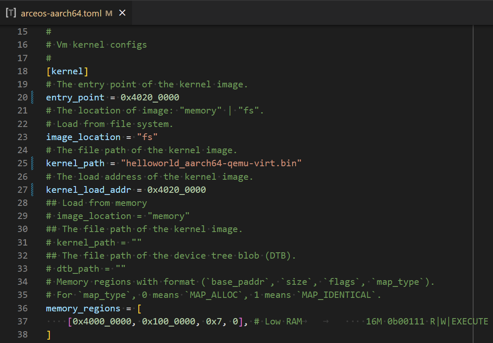
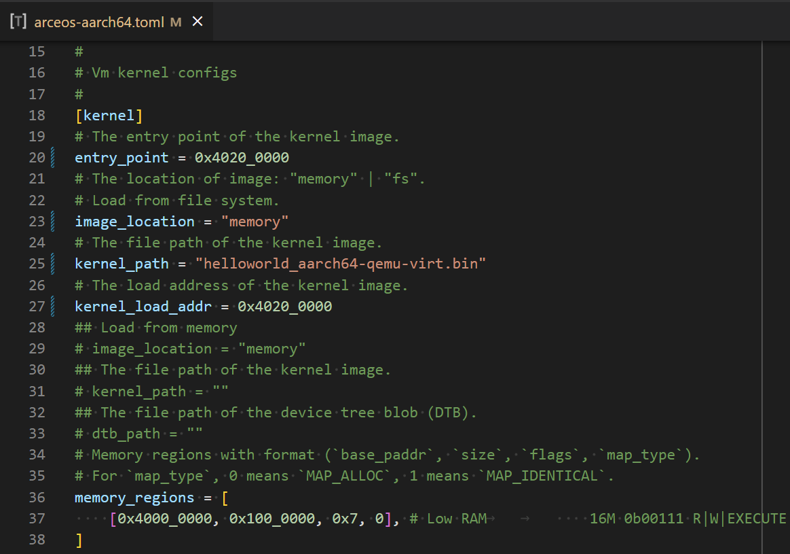
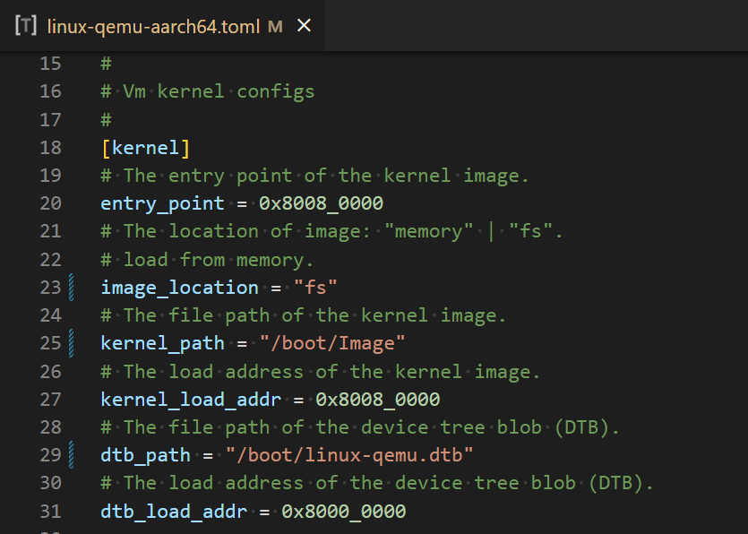
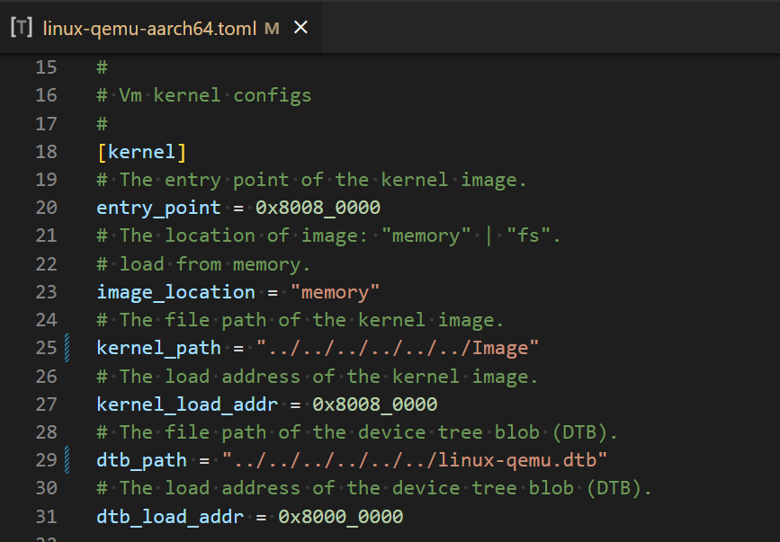

QEMU AArch64
目前，在 QEMU AArch64 平台上已经对独立运行 ArceOS 和 Linux 以及同时运行 ArceOS + Linux 的情况进行了验证。
ArceOS
首先，获取 ArceOS 主线代码 git clone https://github.com/arceos-org/arceos.git，然后执行 make PLATFORM=aarch64-qemu-virt SMP=1 A=examples/helloworld 获取 helloworld_aarch64-qemu-virt.bin
从文件系统加载运行
-
制作一个磁盘镜像文件，并将客户机镜像放到文件系统中
-
使用
make disk_img命令生成一个空的 FAT32 磁盘镜像文件disk.img -
手动挂载
disk.img，然后将自己的客户机镜像复制到该文件系统中$ mkdir -p tmp $ sudo mount disk.img tmp $ sudo cp helloworld_aarch64-qemu-virt.bin tmp/ $ sudo umount tmp
-
-
修改对应的
./configs/vms/arceos-aarch64.toml文件中的配置项
image_location="fs"表示从文件系统加载kernel_path指出内核镜像在文件系统中的路径entry_point指出内核镜像的入口地址kernel_load_addr指出内核镜像的加载地址- 其他
-
执行
make ACCEL=n ARCH=aarch64 LOG=info VM_CONFIGS=configs/vms/arceos-aarch64.toml FEATURES=page-alloc-64g APP_FEATURES=fs run构建 AxVisor，并在 QEMU 中启动。d8888 .d88888b. .d8888b. d88888 d88P" "Y88b d88P Y88b d88P888 888 888 Y88b. d88P 888 888d888 .d8888b .d88b. 888 888 "Y888b. d88P 888 888P" d88P" d8P Y8b 888 888 "Y88b. d88P 888 888 888 88888888 888 888 "888 d8888888888 888 Y88b. Y8b. Y88b. .d88P Y88b d88P d88P 888 888 "Y8888P "Y8888 "Y88888P" "Y8888P" arch = aarch64 platform = aarch64-qemu-virt-hv target = aarch64-unknown-none-softfloat build_mode = release log_level = info smp = 1 [ 0.021701 0 axruntime:130] Logging is enabled. [ 0.027394 0 axruntime:131] Primary CPU 0 started, dtb = 0x48000000. [ 0.029626 0 axruntime:133] Found physcial memory regions: [ 0.031888 0 axruntime:135] [PA:0x40080000, PA:0x400f5000) .text (READ | EXECUTE | RESERVED) [ 0.034860 0 axruntime:135] [PA:0x400f5000, PA:0x4010b000) .rodata (READ | RESERVED) [ 0.036593 0 axruntime:135] [PA:0x4010b000, PA:0x40111000) .data .tdata .tbss .percpu (READ | WRITE | RESERVED) [ 0.038382 0 axruntime:135] [PA:0x40111000, PA:0x40151000) boot stack (READ | WRITE | RESERVED) [ 0.039937 0 axruntime:135] [PA:0x40151000, PA:0x40377000) .bss (READ | WRITE | RESERVED) [ 0.041525 0 axruntime:135] [PA:0x40377000, PA:0x48000000) free memory (READ | WRITE | FREE) [ 0.043321 0 axruntime:135] [PA:0x9000000, PA:0x9001000) mmio (READ | WRITE | DEVICE | RESERVED) [ 0.044954 0 axruntime:135] [PA:0x9040000, PA:0x9041000) mmio (READ | WRITE | DEVICE | RESERVED) [ 0.046523 0 axruntime:135] [PA:0x9100000, PA:0x9101000) mmio (READ | WRITE | DEVICE | RESERVED) [ 0.048067 0 axruntime:135] [PA:0x8000000, PA:0x8020000) mmio (READ | WRITE | DEVICE | RESERVED) [ 0.049632 0 axruntime:135] [PA:0xa000000, PA:0xa004000) mmio (READ | WRITE | DEVICE | RESERVED) [ 0.051230 0 axruntime:135] [PA:0x10000000, PA:0x3eff0000) mmio (READ | WRITE | DEVICE | RESERVED) [ 0.052817 0 axruntime:135] [PA:0x4010000000, PA:0x4020000000) mmio (READ | WRITE | DEVICE | RESERVED) [ 0.054762 0 axruntime:208] Initialize global memory allocator... [ 0.056225 0 axruntime:209] use TLSF allocator. [ 0.069167 0 axmm:60] Initialize virtual memory management... [ 0.098576 0 axruntime:150] Initialize platform devices... [ 0.099990 0 axhal::platform::aarch64_common::gic:67] Initialize GICv2... [ 0.106140 0 axtask::api:73] Initialize scheduling... [ 0.114781 0 axtask::api:79] use FIFO scheduler. [ 0.116139 0 axdriver:152] Initialize device drivers... [ 0.117557 0 axdriver:153] device model: static [ 0.143851 0 virtio_drivers::device::blk:59] config: 0x1000e000 [ 0.146209 0 virtio_drivers::device::blk:64] found a block device of size 65536KB [ 0.151708 0 axdriver::bus::pci:104] registered a new Block device at 00:02.0: "virtio-blk" [ 0.513409 0 axfs:41] Initialize filesystems... [ 0.514900 0 axfs:44] use block device 0: "virtio-blk" [ 0.636117 0 fatfs::dir:139] Is a directory [ 0.717647 0 fatfs::dir:139] Is a directory [ 0.817118 0 fatfs::dir:139] Is a directory [ 0.916598 0 fatfs::dir:139] Is a directory [ 0.942786 0 axruntime:176] Initialize interrupt handlers... [ 0.947032 0 axruntime:186] Primary CPU 0 init OK. [ 0.948651 0:2 axvisor:17] Starting virtualization... [ 0.950696 0:2 axvisor:19] Hardware support: true [ 0.959113 0:4 axvisor::vmm::timer:103] Initing HV Timer... [ 0.960950 0:4 axvisor::hal:117] Hardware virtualization support enabled on core 0 [ 1.084200 0:2 axvisor::vmm::config:33] Creating VM [1] "arceos" [ 1.089658 0:2 axvm::vm:113] Setting up memory region: [0x40000000~0x41000000] READ | WRITE | EXECUTE [ 1.132639 0:2 axvm::vm:156] Setting up passthrough device memory region: [0x8000000~0x8050000] -> [0x8000000~0x8050000] [ 1.137699 0:2 axvm::vm:156] Setting up passthrough device memory region: [0x9000000~0x9001000] -> [0x9000000~0x9001000] [ 1.140182 0:2 axvm::vm:156] Setting up passthrough device memory region: [0x9010000~0x9011000] -> [0x9010000~0x9011000] [ 1.142061 0:2 axvm::vm:156] Setting up passthrough device memory region: [0x9030000~0x9031000] -> [0x9030000~0x9031000] [ 1.143926 0:2 axvm::vm:156] Setting up passthrough device memory region: [0xa000000~0xa004000] -> [0xa000000~0xa004000] [ 1.147133 0:2 axvm::vm:191] VM created: id=1 [ 1.149137 0:2 axvm::vm:206] VM setup: id=1 [ 1.150930 0:2 axvisor::vmm::config:40] VM[1] created success, loading images... [ 1.152892 0:2 axvisor::vmm::images::fs:102] Loading VM images from filesystem [ 1.201653 0:2 axvisor::vmm:29] Setting up vcpus... [ 1.205788 0:2 axvisor::vmm::vcpus:176] Initializing VM[1]'s 1 vcpus [ 1.208187 0:2 axvisor::vmm::vcpus:207] Spawning task for VM[1] Vcpu[0] [ 1.211894 0:2 axvisor::vmm::vcpus:219] Vcpu task Task(5, "VM[1]-VCpu[0]") created cpumask: [0, ] [ 1.215220 0:2 axvisor::vmm:36] VMM starting, booting VMs... [ 1.217058 0:2 axvm::vm:273] Booting VM[1] [ 1.218682 0:2 axvisor::vmm:42] VM[1] boot success [ 1.223139 0:5 axvisor::vmm::vcpus:240] VM[1] Vcpu[0] waiting for running [ 1.225580 0:5 axvisor::vmm::vcpus:243] VM[1] Vcpu[0] running... d8888 .d88888b. .d8888b. d88888 d88P" "Y88b d88P Y88b d88P888 888 888 Y88b. d88P 888 888d888 .d8888b .d88b. 888 888 "Y888b. d88P 888 888P" d88P" d8P Y8b 888 888 "Y88b. d88P 888 888 888 88888888 888 888 "888 d8888888888 888 Y88b. Y8b. Y88b. .d88P Y88b d88P d88P 888 888 "Y8888P "Y8888 "Y88888P" "Y8888P" arch = aarch64 platform = aarch64-qemu-virt target = aarch64-unknown-none-softfloat build_mode = release log_level = warn smp = 1 Hello, world! [ 1.249320 0:5 axvisor::vmm::vcpus:288] VM[1] run VCpu[0] SystemDown [ 1.251119 0:5 axhal::platform::aarch64_common::psci:98] Shutting down...
从内存加载运行
-
修改对应的
./configs/vms/arceos-aarch64.toml中的配置项
image_location="memory"配置项kernel_path指定内核镜像在工作空间中的相对/绝对路径entry_point指出内核镜像的入口地址kernel_load_addr指出内核镜像的加载地址- 其他
-
执行
make ACCEL=n ARCH=aarch64 LOG=info VM_CONFIGS=configs/vms/arceos-aarch64.toml FEATURES=page-alloc-64g run构建 AxVisor，并在 QEMU 中启动。d8888 .d88888b. .d8888b. d88888 d88P" "Y88b d88P Y88b d88P888 888 888 Y88b. d88P 888 888d888 .d8888b .d88b. 888 888 "Y888b. d88P 888 888P" d88P" d8P Y8b 888 888 "Y88b. d88P 888 888 888 88888888 888 888 "888 d8888888888 888 Y88b. Y8b. Y88b. .d88P Y88b d88P d88P 888 888 "Y8888P "Y8888 "Y88888P" "Y8888P" arch = aarch64 platform = aarch64-qemu-virt-hv target = aarch64-unknown-none-softfloat build_mode = release log_level = info smp = 1 [ 0.023017 0 axruntime:130] Logging is enabled. [ 0.028629 0 axruntime:131] Primary CPU 0 started, dtb = 0x48000000. [ 0.030723 0 axruntime:133] Found physcial memory regions: [ 0.032913 0 axruntime:135] [PA:0x40080000, PA:0x400d6000) .text (READ | EXECUTE | RESERVED) [ 0.035838 0 axruntime:135] [PA:0x400d6000, PA:0x400ef000) .rodata (READ | RESERVED) [ 0.037540 0 axruntime:135] [PA:0x400ef000, PA:0x400f5000) .data .tdata .tbss .percpu (READ | WRITE | RESERVED) [ 0.039264 0 axruntime:135] [PA:0x400f5000, PA:0x40135000) boot stack (READ | WRITE | RESERVED) [ 0.040750 0 axruntime:135] [PA:0x40135000, PA:0x4035b000) .bss (READ | WRITE | RESERVED) [ 0.042266 0 axruntime:135] [PA:0x4035b000, PA:0x48000000) free memory (READ | WRITE | FREE) [ 0.043993 0 axruntime:135] [PA:0x9000000, PA:0x9001000) mmio (READ | WRITE | DEVICE | RESERVED) [ 0.045562 0 axruntime:135] [PA:0x9040000, PA:0x9041000) mmio (READ | WRITE | DEVICE | RESERVED) [ 0.047107 0 axruntime:135] [PA:0x9100000, PA:0x9101000) mmio (READ | WRITE | DEVICE | RESERVED) [ 0.048584 0 axruntime:135] [PA:0x8000000, PA:0x8020000) mmio (READ | WRITE | DEVICE | RESERVED) [ 0.050079 0 axruntime:135] [PA:0xa000000, PA:0xa004000) mmio (READ | WRITE | DEVICE | RESERVED) [ 0.051598 0 axruntime:135] [PA:0x10000000, PA:0x3eff0000) mmio (READ | WRITE | DEVICE | RESERVED) [ 0.053122 0 axruntime:135] [PA:0x4010000000, PA:0x4020000000) mmio (READ | WRITE | DEVICE | RESERVED) [ 0.054983 0 axruntime:208] Initialize global memory allocator... [ 0.056366 0 axruntime:209] use TLSF allocator. [ 0.069022 0 axmm:60] Initialize virtual memory management... [ 0.098512 0 axruntime:150] Initialize platform devices... [ 0.099837 0 axhal::platform::aarch64_common::gic:67] Initialize GICv2... [ 0.105803 0 axtask::api:73] Initialize scheduling... [ 0.114452 0 axtask::api:79] use FIFO scheduler. [ 0.115748 0 axruntime:176] Initialize interrupt handlers... [ 0.121138 0 axruntime:186] Primary CPU 0 init OK. [ 0.122705 0:2 axvisor:17] Starting virtualization... [ 0.124615 0:2 axvisor:19] Hardware support: true [ 0.132838 0:4 axvisor::vmm::timer:103] Initing HV Timer... [ 0.134591 0:4 axvisor::hal:117] Hardware virtualization support enabled on core 0 [ 0.260703 0:2 axvisor::vmm::config:33] Creating VM [1] "arceos" [ 0.266264 0:2 axvm::vm:113] Setting up memory region: [0x40000000~0x41000000] READ | WRITE | EXECUTE [ 0.301715 0:2 axvm::vm:156] Setting up passthrough device memory region: [0x8000000~0x8050000] -> [0x8000000~0x8050000] [ 0.306525 0:2 axvm::vm:156] Setting up passthrough device memory region: [0x9000000~0x9001000] -> [0x9000000~0x9001000] [ 0.309071 0:2 axvm::vm:156] Setting up passthrough device memory region: [0x9010000~0x9011000] -> [0x9010000~0x9011000] [ 0.310897 0:2 axvm::vm:156] Setting up passthrough device memory region: [0x9030000~0x9031000] -> [0x9030000~0x9031000] [ 0.312663 0:2 axvm::vm:156] Setting up passthrough device memory region: [0xa000000~0xa004000] -> [0xa000000~0xa004000] [ 0.315628 0:2 axvm::vm:191] VM created: id=1 [ 0.317606 0:2 axvm::vm:206] VM setup: id=1 [ 0.319489 0:2 axvisor::vmm::config:40] VM[1] created success, loading images... [ 0.322154 0:2 axvisor::vmm::images:24] Loading VM[1] images from memory [ 0.329972 0:2 axvisor::vmm:29] Setting up vcpus... [ 0.334059 0:2 axvisor::vmm::vcpus:176] Initializing VM[1]'s 1 vcpus [ 0.336430 0:2 axvisor::vmm::vcpus:207] Spawning task for VM[1] Vcpu[0] [ 0.340105 0:2 axvisor::vmm::vcpus:219] Vcpu task Task(5, "VM[1]-VCpu[0]") created cpumask: [0, ] [ 0.343484 0:2 axvisor::vmm:36] VMM starting, booting VMs... [ 0.345017 0:2 axvm::vm:273] Booting VM[1] [ 0.346616 0:2 axvisor::vmm:42] VM[1] boot success [ 0.351053 0:5 axvisor::vmm::vcpus:240] VM[1] Vcpu[0] waiting for running [ 0.353230 0:5 axvisor::vmm::vcpus:243] VM[1] Vcpu[0] running... d8888 .d88888b. .d8888b. d88888 d88P" "Y88b d88P Y88b d88P888 888 888 Y88b. d88P 888 888d888 .d8888b .d88b. 888 888 "Y888b. d88P 888 888P" d88P" d8P Y8b 888 888 "Y88b. d88P 888 888 888 88888888 888 888 "888 d8888888888 888 Y88b. Y8b. Y88b. .d88P Y88b d88P d88P 888 888 "Y8888P "Y8888 "Y88888P" "Y8888P" arch = aarch64 platform = aarch64-qemu-virt target = aarch64-unknown-none-softfloat build_mode = release log_level = warn smp = 1 Hello, world! [ 0.376780 0:5 axvisor::vmm::vcpus:288] VM[1] run VCpu[0] SystemDown [ 0.378516 0:5 axhal::platform::aarch64_common::psci:98] Shutting down...
Linux
首先，获取 Linux 主线代码 git clone git@github.com:arceos-hypervisor/linux-6.2.0.git，然后执行 make ARCH=arm64 CROSS_COMPILE=aarch64-linux-gnu- defconfig 再执行 make ARCH=arm64 CROSS_COMPILE=aarch64-linux-gnu- -j$(nproc) 以获取 Image
然后，执行 dtc -I dts -O dtb -o linux-qemu.dtb configs/vms/linux-qemu.dts 编译 Linux 客户机需要使用的设备树文件 linux-qemu.dtb
从文件系统加载运行
-
执行
make ubuntu_img ARCH=aarch64制作一个简单的根文件系统镜像disk.img作为 Linux 客户机启动之后的文件系统，然后手动挂载disk.img，然后将 Image 和 linux-qemu.dtb 复制到该文件系统中$ mkdir -p tmp $ sudo mount disk.img tmp $ sudo cp Image tmp/boot/ $ sudo cp linux-qemu.dtb tmp/boot/ $ sudo umount tmp -
修改对应的
./configs/vms/linux-qemu-aarch64.toml文件中的配置项
image_location="fs"表示从文件系统加载kernel_path指出内核镜像在文件系统中的路径entry_point指出内核镜像的入口地址kernel_load_addr指出内核镜像的加载地址- 其他
-
执行
make ARCH=aarch64 VM_CONFIGS=configs/vms/linux-qemu-aarch64.toml LOG=debug BUS=mmio NET=y FEATURES=page-alloc-64g,ext4fs APP_FEATURES=fs MEM=8g BLK=y run构建 AxVisor，并在 QEMU 中启动。
从内存加载运行
-
执行
make ubuntu_img ARCH=aarch64制作一个简单的根文件系统镜像disk.img作为 Linux 客户机启动之后的文件系统 -
修改对应的
./configs/vms/linux-qemu-aarch64.toml中的配置项
image_location="memory"配置项kernel_path指定内核镜像在工作空间中的相对/绝对路径entry_point指出内核镜像的入口地址kernel_load_addr指出内核镜像的加载地址- 其他
-
执行
make ARCH=aarch64 VM_CONFIGS=configs/vms/linux-qemu-aarch64.toml LOG=debug BUS=mmio NET=y FEATURES=page-alloc-64g MEM=8g run构建 AxVisor，并在 QEMU 中启动。d8888 .d88888b. .d8888b. d88888 d88P" "Y88b d88P Y88b d88P888 888 888 Y88b. d88P 888 888d888 .d8888b .d88b. 888 888 "Y888b. d88P 888 888P" d88P" d8P Y8b 888 888 "Y88b. d88P 888 888 888 88888888 888 888 "888 d8888888888 888 Y88b. Y8b. Y88b. .d88P Y88b d88P d88P 888 888 "Y8888P "Y8888 "Y88888P" "Y8888P" arch = aarch64 platform = aarch64-qemu-virt-hv target = aarch64-unknown-none-softfloat build_mode = release log_level = debug smp = 1 [ 0.021692 0 axruntime:130] Logging is enabled. [ 0.027480 0 axruntime:131] Primary CPU 0 started, dtb = 0x48000000. [ 0.029740 0 axruntime:133] Found physcial memory regions: [ 0.032052 0 axruntime:135] [PA:0x40080000, PA:0x400d9000) .text (READ | EXECUTE | RESERVED) [ 0.035160 0 axruntime:135] [PA:0x400d9000, PA:0x42a86000) .rodata (READ | RESERVED) [ 0.036925 0 axruntime:135] [PA:0x42a86000, PA:0x42a8c000) .data .tdata .tbss .percpu (READ | WRITE | RESERVED) [ 0.038841 0 axruntime:135] [PA:0x42a8c000, PA:0x42acc000) boot stack (READ | WRITE | RESERVED) [ 0.040473 0 axruntime:135] [PA:0x42acc000, PA:0x42cf2000) .bss (READ | WRITE | RESERVED) [ 0.042098 0 axruntime:135] [PA:0x42cf2000, PA:0xc0000000) free memory (READ | WRITE | FREE) [ 0.043965 0 axruntime:135] [PA:0x9000000, PA:0x9001000) mmio (READ | WRITE | DEVICE | RESERVED) [ 0.045674 0 axruntime:135] [PA:0x9040000, PA:0x9041000) mmio (READ | WRITE | DEVICE | RESERVED) [ 0.047300 0 axruntime:135] [PA:0x9100000, PA:0x9101000) mmio (READ | WRITE | DEVICE | RESERVED) [ 0.048928 0 axruntime:135] [PA:0x8000000, PA:0x8020000) mmio (READ | WRITE | DEVICE | RESERVED) [ 0.050556 0 axruntime:135] [PA:0xa000000, PA:0xa004000) mmio (READ | WRITE | DEVICE | RESERVED) [ 0.052173 0 axruntime:135] [PA:0x10000000, PA:0x3eff0000) mmio (READ | WRITE | DEVICE | RESERVED) [ 0.053811 0 axruntime:135] [PA:0x4010000000, PA:0x4020000000) mmio (READ | WRITE | DEVICE | RESERVED) [ 0.055851 0 axruntime:208] Initialize global memory allocator... [ 0.057323 0 axruntime:209] use TLSF allocator. [ 0.060322 0 axalloc:230] initialize global allocator at: [0x42cf2000, 0xc0000000) [ 0.073349 0 axmm:60] Initialize virtual memory management... [ 0.179788 0 axmm:63] kernel address space init OK: AddrSpace { va_range: VA:0x0..VA:0xfffffffff000, page_table_root: PA:0x42cfa000, } [ 0.186432 0 axruntime:150] Initialize platform devices... [ 0.187828 0 axhal::platform::aarch64_common::gic:67] Initialize GICv2... [ 0.194027 0 axtask::api:73] Initialize scheduling... [ 0.199817 0 axtask::task:115] new task: Task(1, "idle") [ 0.204617 0 axtask::task:115] new task: Task(3, "gc") [ 0.207868 0 axalloc:118] expand heap memory: [0x432fb000, 0x4333b000) [ 0.210474 0 axalloc:118] expand heap memory: [0x4333b000, 0x433bb000) [ 0.213193 0 axtask::api:79] use FIFO scheduler. [ 0.214543 0 axruntime:176] Initialize interrupt handlers... [ 0.218724 0 axruntime:186] Primary CPU 0 init OK. [ 0.220417 0:2 axvisor:17] Starting virtualization... [ 0.222465 0:2 axvisor:19] Hardware support: true [ 0.224491 0:2 axtask::task:115] new task: Task(4, "") [ 0.226959 0:2 axalloc:118] expand heap memory: [0x433bb000, 0x434bb000) [ 0.229776 0:2 axtask::run_queue:234] task add: Task(4, "") on run_queue 0 [ 0.235809 0:3 axtask::run_queue:418] task block: Task(3, "gc") [ 0.237961 0:4 axvisor::vmm::timer:103] Initing HV Timer... [ 0.239881 0:4 axvisor::hal:117] Hardware virtualization support enabled on core 0 [ 0.243229 0:4 axtask::run_queue:357] task exit: Task(4, ""), exit_code=0 [ 0.247022 0:4 axtask::run_queue:260] task unblock: Task(3, "gc") on run_queue 0 [ 0.249708 0:2 axvisor::hal:78] IRQ handler 26 [ 0.257112 0:2 axvisor::hal:78] IRQ handler 26 [ 0.267113 0:2 axvisor::hal:78] IRQ handler 26 [ 0.277201 0:2 axvisor::hal:78] IRQ handler 26 [ 0.287106 0:2 axvisor::hal:78] IRQ handler 26 [ 0.297082 0:2 axvisor::hal:78] IRQ handler 26 [ 0.307110 0:2 axvisor::hal:78] IRQ handler 26 [ 0.317084 0:2 axvisor::hal:78] IRQ handler 26 [ 0.327094 0:2 axvisor::hal:78] IRQ handler 26 [ 0.337102 0:2 axvisor::hal:78] IRQ handler 26 [ 0.347177 0:2 axvisor::hal:78] IRQ handler 26 [ 0.357112 0:2 axvisor::hal:78] IRQ handler 26 [ 0.367086 0:2 axvisor::hal:78] IRQ handler 26 [ 0.377094 0:2 axvisor::hal:78] IRQ handler 26 [ 0.386480 0:2 axvisor::vmm::config:33] Creating VM [1] "linux-qemu" [ 0.387827 0:2 axvisor::hal:78] IRQ handler 26 [ 0.393430 0:2 axvm::vm:113] Setting up memory region: [0x80000000~0xc0000000] READ | WRITE | EXECUTE [ 1.583826 0:2 axvisor::hal:78] IRQ handler 26 [ 1.586436 0:2 axaddrspace::address_space::backend::linear:22] map_linear: [GPA:0x80000000, GPA:0xc0000000) -> [PA:0x80000000, PA:0xc0000000) READ | WRITE | EXECUTE [ 1.594936 0:2 axvisor::hal:78] IRQ handler 26 [ 1.604917 0:2 axvisor::hal:78] IRQ handler 26 [ 1.614900 0:2 axvisor::hal:78] IRQ handler 26 [ 1.624917 0:2 axvisor::hal:78] IRQ handler 26 [ 1.634917 0:2 axvisor::hal:78] IRQ handler 26 [ 1.644916 0:2 axvisor::hal:78] IRQ handler 26 [ 1.654915 0:2 axvisor::hal:78] IRQ handler 26 [ 1.664915 0:2 axvisor::hal:78] IRQ handler 26 [ 1.674915 0:2 axvisor::hal:78] IRQ handler 26 [ 1.684915 0:2 axvisor::hal:78] IRQ handler 26 [ 1.694903 0:2 axvisor::hal:78] IRQ handler 26 [ 1.704908 0:2 axvisor::hal:78] IRQ handler 26 [ 1.714920 0:2 axvisor::hal:78] IRQ handler 26 [ 1.724914 0:2 axvisor::hal:78] IRQ handler 26 [ 1.734915 0:2 axvisor::hal:78] IRQ handler 26 [ 1.744914 0:2 axvisor::hal:78] IRQ handler 26 [ 1.754913 0:2 axvisor::hal:78] IRQ handler 26 [ 1.764913 0:2 axvisor::hal:78] IRQ handler 26 [ 1.774916 0:2 axvisor::hal:78] IRQ handler 26 [ 1.784914 0:2 axvisor::hal:78] IRQ handler 26 [ 1.794914 0:2 axvisor::hal:78] IRQ handler 26 [ 1.804913 0:2 axvisor::hal:78] IRQ handler 26 [ 1.814915 0:2 axvisor::hal:78] IRQ handler 26 [ 1.824915 0:2 axvisor::hal:78] IRQ handler 26 [ 1.834914 0:2 axvisor::hal:78] IRQ handler 26 [ 1.844915 0:2 axvisor::hal:78] IRQ handler 26 [ 1.854913 0:2 axvisor::hal:78] IRQ handler 26 [ 1.864923 0:2 axvisor::hal:78] IRQ handler 26 [ 1.874918 0:2 axvisor::hal:78] IRQ handler 26 [ 1.884924 0:2 axvisor::hal:78] IRQ handler 26 [ 1.894922 0:2 axvisor::hal:78] IRQ handler 26 [ 1.904899 0:2 axvisor::hal:78] IRQ handler 26 [ 1.914915 0:2 axvisor::hal:78] IRQ handler 26 [ 1.924915 0:2 axvisor::hal:78] IRQ handler 26 [ 1.934916 0:2 axvisor::hal:78] IRQ handler 26 [ 1.944916 0:2 axvisor::hal:78] IRQ handler 26 [ 1.954902 0:2 axvisor::hal:78] IRQ handler 26 [ 1.964918 0:2 axvisor::hal:78] IRQ handler 26 [ 1.974916 0:2 axvisor::hal:78] IRQ handler 26 [ 1.984900 0:2 axvisor::hal:78] IRQ handler 26 [ 1.994922 0:2 axvisor::hal:78] IRQ handler 26 [ 2.004915 0:2 axvisor::hal:78] IRQ handler 26 [ 2.014914 0:2 axvisor::hal:78] IRQ handler 26 [ 2.024915 0:2 axvisor::hal:78] IRQ handler 26 [ 2.034917 0:2 axvisor::hal:78] IRQ handler 26 [ 2.044913 0:2 axvisor::hal:78] IRQ handler 26 [ 2.054912 0:2 axvisor::hal:78] IRQ handler 26 [ 2.064917 0:2 axvisor::hal:78] IRQ handler 26 [ 2.074909 0:2 axvisor::hal:78] IRQ handler 26 [ 2.084897 0:2 axvisor::hal:78] IRQ handler 26 [ 2.094911 0:2 axvisor::hal:78] IRQ handler 26 [ 2.104912 0:2 axvisor::hal:78] IRQ handler 26 [ 2.114910 0:2 axvisor::hal:78] IRQ handler 26 [ 2.124910 0:2 axvisor::hal:78] IRQ handler 26 [ 2.134897 0:2 axvisor::hal:78] IRQ handler 26 [ 2.144913 0:2 axvisor::hal:78] IRQ handler 26 [ 2.154911 0:2 axvisor::hal:78] IRQ handler 26 [ 2.164912 0:2 axvisor::hal:78] IRQ handler 26 [ 2.174910 0:2 axvisor::hal:78] IRQ handler 26 [ 2.184910 0:2 axvisor::hal:78] IRQ handler 26 [ 2.194914 0:2 axvisor::hal:78] IRQ handler 26 [ 2.204916 0:2 axvisor::hal:78] IRQ handler 26 [ 2.214910 0:2 axvisor::hal:78] IRQ handler 26 [ 2.224910 0:2 axvisor::hal:78] IRQ handler 26 [ 2.234903 0:2 axvisor::hal:78] IRQ handler 26 [ 2.244914 0:2 axvisor::hal:78] IRQ handler 26 [ 2.254911 0:2 axvisor::hal:78] IRQ handler 26 [ 2.264896 0:2 axvisor::hal:78] IRQ handler 26 [ 2.274910 0:2 axvisor::hal:78] IRQ handler 26 [ 2.284909 0:2 axvisor::hal:78] IRQ handler 26 [ 2.294913 0:2 axvisor::hal:78] IRQ handler 26 [ 2.297840 0:2 axvm::vm:156] Setting up passthrough device memory region: [0x8000000~0x8050000] -> [0x8000000~0x8050000] [ 2.300794 0:2 axaddrspace::address_space::backend::linear:22] map_linear: [GPA:0x8000000, GPA:0x8050000) -> [PA:0x8000000, PA:0x8050000) READ | WRITE | DEVICE [ 2.304533 0:2 axvm::vm:156] Setting up passthrough device memory region: [0x9000000~0x9001000] -> [0x9000000~0x9001000] [ 2.306624 0:2 axvisor::hal:78] IRQ handler 26 [ 2.308195 0:2 axaddrspace::address_space::backend::linear:22] map_linear: [GPA:0x9000000, GPA:0x9001000) -> [PA:0x9000000, PA:0x9001000) READ | WRITE | DEVICE [ 2.310767 0:2 axvm::vm:156] Setting up passthrough device memory region: [0x9010000~0x9011000] -> [0x9010000~0x9011000] [ 2.312735 0:2 axaddrspace::address_space::backend::linear:22] map_linear: [GPA:0x9010000, GPA:0x9011000) -> [PA:0x9010000, PA:0x9011000) READ | WRITE | DEVICE [ 2.315260 0:2 axvisor::hal:78] IRQ handler 26 [ 2.316282 0:2 axvm::vm:156] Setting up passthrough device memory region: [0x9030000~0x9031000] -> [0x9030000~0x9031000] [ 2.318198 0:2 axaddrspace::address_space::backend::linear:22] map_linear: [GPA:0x9030000, GPA:0x9031000) -> [PA:0x9030000, PA:0x9031000) READ | WRITE | DEVICE [ 2.320626 0:2 axvm::vm:156] Setting up passthrough device memory region: [0xa000000~0xa004000] -> [0xa000000~0xa004000] [ 2.322538 0:2 axaddrspace::address_space::backend::linear:22] map_linear: [GPA:0xa000000, GPA:0xa004000) -> [PA:0xa000000, PA:0xa004000) READ | WRITE | DEVICE [ 2.325021 0:2 axvisor::hal:78] IRQ handler 26 [ 2.327226 0:2 axvm::vm:191] VM created: id=1 [ 2.329017 0:2 arm_vcpu::vcpu:88] set vcpu entry:GPA:0x80080000 [ 2.330596 0:2 arm_vcpu::vcpu:94] set vcpu ept root:PA:0x434bb000 [ 2.332432 0:2 axvm::vm:206] VM setup: id=1 [ 2.334321 0:2 axvisor::vmm::config:40] VM[1] created success, loading images... [ 2.335835 0:2 axvisor::hal:78] IRQ handler 26 [ 2.338162 0:2 axvisor::vmm::images:24] Loading VM[1] images from memory [ 2.340095 0:2 axvisor::vmm::images:55] loading VM image from memory GPA:0x80080000 43637248 [ 2.343410 0:2 axaddrspace::address_space:203] start GPA:0x80080000 end GPA:0x82a1da00 area size 0x40000000 [ 2.345222 0:2 axvisor::hal:78] IRQ handler 26 [ 2.354929 0:2 axvisor::hal:78] IRQ handler 26 [ 2.364922 0:2 axvisor::hal:78] IRQ handler 26 [ 2.374933 0:2 axvisor::hal:78] IRQ handler 26 [ 2.384936 0:2 axvisor::hal:78] IRQ handler 26 [ 2.394937 0:2 axvisor::hal:78] IRQ handler 26 [ 2.404922 0:2 axvisor::hal:78] IRQ handler 26 [ 2.414931 0:2 axvisor::hal:78] IRQ handler 26 [ 2.424933 0:2 axvisor::hal:78] IRQ handler 26 [ 2.434932 0:2 axvisor::hal:78] IRQ handler 26 [ 2.444935 0:2 axvisor::hal:78] IRQ handler 26 [ 2.454932 0:2 axvisor::hal:78] IRQ handler 26 [ 2.464935 0:2 axvisor::hal:78] IRQ handler 26 [ 2.474919 0:2 axvisor::hal:78] IRQ handler 26 [ 2.484932 0:2 axvisor::hal:78] IRQ handler 26 [ 2.495088 0:2 axvisor::hal:78] IRQ handler 26 [ 2.504934 0:2 axvisor::hal:78] IRQ handler 26 [ 2.514933 0:2 axvisor::hal:78] IRQ handler 26 [ 2.524932 0:2 axvisor::hal:78] IRQ handler 26 [ 2.534915 0:2 axvisor::hal:78] IRQ handler 26 [ 2.541916 0:2 axvisor::vmm::images:81] copy size: 2560 [ 2.543664 0:2 axvisor::vmm::images:55] loading VM image from memory GPA:0x80000000 6252 [ 2.545260 0:2 axvisor::hal:78] IRQ handler 26 [ 2.546363 0:2 axaddrspace::address_space:203] start GPA:0x80000000 end GPA:0x8000186c area size 0x40000000 [ 2.548185 0:2 axvisor::vmm::images:81] copy size: 2156 [ 2.552657 0:2 axvisor::vmm:29] Setting up vcpus... [ 2.554935 0:2 axvisor::hal:78] IRQ handler 26 [ 2.557954 0:2 axvisor::vmm::vcpus:176] Initializing VM[1]'s 1 vcpus [ 2.560474 0:2 axvisor::vmm::vcpus:207] Spawning task for VM[1] Vcpu[0] [ 2.563430 0:2 axtask::task:115] new task: Task(5, "VM[1]-VCpu[0]") [ 2.564932 0:2 axvisor::hal:78] IRQ handler 26 [ 2.567172 0:2 axvisor::vmm::vcpus:219] Vcpu task Task(5, "VM[1]-VCpu[0]") created cpumask: [0, ] [ 2.569574 0:2 axtask::run_queue:234] task add: Task(5, "VM[1]-VCpu[0]") on run_queue 0 [ 2.572270 0:2 axvisor::vmm:36] VMM starting, booting VMs... [ 2.573899 0:2 axvm::vm:273] Booting VM[1] [ 2.574910 0:2 axvisor::hal:78] IRQ handler 26 [ 2.576666 0:2 axvisor::vmm:42] VM[1] boot success [ 2.579350 0:2 axtask::run_queue:418] task block: Task(2, "main") [ 2.581788 0:3 axtask::task:433] task drop: Task(4, "") [ 2.583866 0:3 axtask::run_queue:418] task block: Task(3, "gc") [ 2.585237 0:5 axvisor::hal:78] IRQ handler 26 [ 2.587055 0:5 axvisor::vmm::vcpus:240] VM[1] Vcpu[0] waiting for running [ 2.589337 0:5 axvisor::vmm::vcpus:243] VM[1] Vcpu[0] running... [ 0.000000] Booting Linux on physical CPU 0x0000000000 [0x410fd083] [ 0.000000] Linux version 6.9.0-rc5-00159-gc942a0cd3603 (zcs@server) (aarch64-linux-gnu-gcc (Linaro GCC 6.3-2017.05) 6.3.1 20170404, GNU ld (Linaro_Binutils-2017.05) 2.27.0.20161019) #1 SMP PREEMPT Thu Mar 27 08:38:03 UTC 2025 [ 0.000000] KASLR enabled [ 0.000000] random: crng init done [ 0.000000] Machine model: linux,dummy-virt [ 0.000000] efi: UEFI not found. [ 0.000000] [Firmware Bug]: Kernel image misaligned at boot, please fix your bootloader! [ 0.000000] earlycon: pl11 at MMIO 0x0000000009000000 (options '') [ 0.000000] printk: legacy bootconsole [pl11] enabled [ 0.000000] NUMA: No NUMA configuration found [ 0.000000] NUMA: Faking a node at [mem 0x0000000080000000-0x00000000bfffffff] [ 0.000000] NUMA: NODE_DATA [mem 0xbfdfd9c0-0xbfdfffff] [ 0.000000] Zone ranges: [ 0.000000] DMA [mem 0x0000000080000000-0x00000000bfffffff] [ 0.000000] DMA32 empty [ 0.000000] Normal empty [ 0.000000] Movable zone start for each node [ 0.000000] Early memory node ranges [ 0.000000] node 0: [mem 0x0000000080000000-0x00000000bfffffff] [ 0.000000] Initmem setup node 0 [mem 0x0000000080000000-0x00000000bfffffff] [ 0.000000] cma: Reserved 32 MiB at 0x00000000bcc00000 on node -1 [ 0.000000] psci: probing for conduit method from DT. [ 0.000000] psci: PSCIv1.1 detected in firmware. [ 0.000000] psci: Using standard PSCI v0.2 function IDs [ 0.000000] psci: Trusted OS migration not required [ 0.000000] psci: SMC Calling Convention v1.0 [ 0.000000] percpu: Embedded 24 pages/cpu s58728 r8192 d31384 u98304 [ 0.000000] Detected PIPT I-cache on CPU0 [ 0.000000] CPU features: detected: Spectre-v2 [ 0.000000] CPU features: detected: Spectre-v3a [ 0.000000] CPU features: detected: Spectre-v4 [ 0.000000] CPU features: detected: Spectre-BHB [ 0.000000] CPU features: kernel page table isolation forced ON by KASLR [ 0.000000] CPU features: detected: Kernel page table isolation (KPTI) [ 0.000000] CPU features: detected: ARM erratum 1742098 [ 0.000000] CPU features: detected: ARM errata 1165522, 1319367, or 1530923 [ 0.000000] alternatives: applying boot alternatives [ 0.000000] Kernel command line: earlycon console=ttyAMA0 root=/dev/vda rw audit=0 default_hugepagesz=32M hugepagesz=32M hugepages=4 [ 0.000000] audit: disabled (until reboot) [ 0.000000] Dentry cache hash table entries: 131072 (order: 8, 1048576 bytes, linear) [ 0.000000] Inode-cache hash table entries: 65536 (order: 7, 524288 bytes, linear) [ 0.000000] Fallback order for Node 0: 0 [ 0.000000] Built 1 zonelists, mobility grouping on. Total pages: 258048 [ 0.000000] Policy zone: DMA [ 0.000000] mem auto-init: stack:off, heap alloc:off, heap free:off [ 0.000000] software IO TLB: SWIOTLB bounce buffer size adjusted to 1MB [ 0.000000] software IO TLB: area num 1. [ 0.000000] software IO TLB: mapped [mem 0x00000000bca00000-0x00000000bcb00000] (1MB) [ 0.000000] Memory: 819184K/1048576K available (16320K kernel code, 4790K rwdata, 11436K rodata, 9920K init, 754K bss, 196624K reserved, 32768K cma-reserved) [ 0.000000] SLUB: HWalign=64, Order=0-3, MinObjects=0, CPUs=1, Nodes=1 [ 0.000000] rcu: Preemptible hierarchical RCU implementation. [ 0.000000] rcu: RCU event tracing is enabled. [ 0.000000] rcu: RCU restricting CPUs from NR_CPUS=512 to nr_cpu_ids=1. [ 0.000000] Trampoline variant of Tasks RCU enabled. [ 0.000000] Tracing variant of Tasks RCU enabled. [ 0.000000] rcu: RCU calculated value of scheduler-enlistment delay is 25 jiffies. [ 0.000000] rcu: Adjusting geometry for rcu_fanout_leaf=16, nr_cpu_ids=1 [ 0.000000] RCU Tasks: Setting shift to 0 and lim to 1 rcu_task_cb_adjust=1. [ 0.000000] RCU Tasks Trace: Setting shift to 0 and lim to 1 rcu_task_cb_adjust=1. [ 0.000000] NR_IRQS: 64, nr_irqs: 64, preallocated irqs: 0 [ 0.000000] Root IRQ handler: gic_handle_irq [ 0.000000] GICv2m: range[mem 0x08020000-0x08020fff], SPI[80:143] [ 0.000000] rcu: srcu_init: Setting srcu_struct sizes based on contention. [ 0.000000] arch_timer: cp15 timer(s) running at 62.50MHz (virt). [ 0.000000] clocksource: arch_sys_counter: mask: 0x1ffffffffffffff max_cycles: 0x1cd42e208c, max_idle_ns: 881590405314 ns [ 0.000582] sched_clock: 57 bits at 63MHz, resolution 16ns, wraps every 4398046511096ns [ 0.067811] Console: colour dummy device 80x25 [ 0.088580] Calibrating delay loop (skipped), value calculated using timer frequency.. 125.00 BogoMIPS (lpj=250000) [ 0.091632] pid_max: default: 32768 minimum: 301 [ 0.105076] LSM: initializing lsm=capability [ 0.124408] Mount-cache hash table entries: 2048 (order: 2, 16384 bytes, linear) [ 0.126743] Mountpoint-cache hash table entries: 2048 (order: 2, 16384 bytes, linear) [ 0.313628] spectre-v4 mitigation disabled by command-line option [ 0.345800] cacheinfo: Unable to detect cache hierarchy for CPU 0 [ 0.451040] rcu: Hierarchical SRCU implementation. [ 0.452834] rcu: Max phase no-delay instances is 1000. [ 0.536606] EFI services will not be available. [ 0.542738] smp: Bringing up secondary CPUs ... [ 0.550670] smp: Brought up 1 node, 1 CPU [ 0.551832] SMP: Total of 1 processors activated. [ 0.553025] CPU: All CPU(s) started at EL1 [ 0.557774] CPU features: detected: 32-bit EL0 Support [ 0.560104] CPU features: detected: 32-bit EL1 Support [ 0.561614] CPU features: detected: CRC32 instructions [ 0.624983] alternatives: applying system-wide alternatives [ 1.013809] devtmpfs: initialized [ 1.283345] clocksource: jiffies: mask: 0xffffffff max_cycles: 0xffffffff, max_idle_ns: 7645041785100000 ns [ 1.302370] futex hash table entries: 256 (order: 2, 16384 bytes, linear) [ 1.359878] pinctrl core: initialized pinctrl subsystem [ 1.466896] DMI not present or invalid. [ 1.634290] NET: Registered PF_NETLINK/PF_ROUTE protocol family [ 1.746001] DMA: preallocated 128 KiB GFP_KERNEL pool for atomic allocations [ 1.753769] DMA: preallocated 128 KiB GFP_KERNEL|GFP_DMA pool for atomic allocations [ 1.765784] DMA: preallocated 128 KiB GFP_KERNEL|GFP_DMA32 pool for atomic allocations [ 1.835254] thermal_sys: Registered thermal governor 'step_wise' [ 1.835916] thermal_sys: Registered thermal governor 'power_allocator' [ 1.841594] cpuidle: using governor menu [ 1.868129] hw-breakpoint: found 6 breakpoint and 4 watchpoint registers. [ 1.873418] ASID allocator initialised with 32768 entries [ 1.990036] Serial: AMBA PL011 UART driver [ 2.870540] 9000000.pl011: ttyAMA0 at MMIO 0x9000000 (irq = 14, base_baud = 0) is a PL011 rev1 [ 2.884892] printk: legacy console [ttyAMA0] enabled [ 2.884892] printk: legacy console [ttyAMA0] enabled [ 2.889249] printk: legacy bootconsole [pl11] disabled [ 2.889249] printk: legacy bootconsole [pl11] disabled [ 3.023638] Modules: 2G module region forced by RANDOMIZE_MODULE_REGION_FULL [ 3.025756] Modules: 0 pages in range for non-PLT usage [ 3.026019] Modules: 513424 pages in range for PLT usage [ 3.126024] HugeTLB: registered 32.0 MiB page size, pre-allocated 4 pages [ 3.128534] HugeTLB: 0 KiB vmemmap can be freed for a 32.0 MiB page [ 3.130469] HugeTLB: registered 1.00 GiB page size, pre-allocated 0 pages [ 3.131849] HugeTLB: 0 KiB vmemmap can be freed for a 1.00 GiB page [ 3.133547] HugeTLB: registered 2.00 MiB page size, pre-allocated 0 pages [ 3.134940] HugeTLB: 0 KiB vmemmap can be freed for a 2.00 MiB page [ 3.136327] HugeTLB: registered 64.0 KiB page size, pre-allocated 0 pages [ 3.138049] HugeTLB: 0 KiB vmemmap can be freed for a 64.0 KiB page [ 3.173964] Demotion targets for Node 0: null [ 3.249986] ACPI: Interpreter disabled. [ 3.379952] iommu: Default domain type: Translated [ 3.382071] iommu: DMA domain TLB invalidation policy: strict mode [ 3.398457] SCSI subsystem initialized [ 3.424136] usbcore: registered new interface driver usbfs [ 3.427239] usbcore: registered new interface driver hub [ 3.430188] usbcore: registered new device driver usb [ 3.480030] pps_core: LinuxPPS API ver. 1 registered [ 3.481191] pps_core: Software ver. 5.3.6 - Copyright 2005-2007 Rodolfo Giometti <giometti@linux.it> [ 3.483999] PTP clock support registered [ 3.491134] EDAC MC: Ver: 3.0.0 [ 3.517522] scmi_core: SCMI protocol bus registered [ 3.567538] FPGA manager framework [ 3.575630] Advanced Linux Sound Architecture Driver Initialized. [ 3.698975] vgaarb: loaded [ 3.740264] clocksource: Switched to clocksource arch_sys_counter [ 3.769981] VFS: Disk quotas dquot_6.6.0 [ 3.772637] VFS: Dquot-cache hash table entries: 512 (order 0, 4096 bytes) [ 3.787827] pnp: PnP ACPI: disabled [ 4.076486] NET: Registered PF_INET protocol family [ 4.090068] IP idents hash table entries: 16384 (order: 5, 131072 bytes, linear) [ 4.138853] tcp_listen_portaddr_hash hash table entries: 512 (order: 1, 8192 bytes, linear) [ 4.141016] Table-perturb hash table entries: 65536 (order: 6, 262144 bytes, linear) [ 4.143752] TCP established hash table entries: 8192 (order: 4, 65536 bytes, linear) [ 4.146811] TCP bind hash table entries: 8192 (order: 6, 262144 bytes, linear) [ 4.149988] TCP: Hash tables configured (established 8192 bind 8192) [ 4.161535] UDP hash table entries: 512 (order: 2, 16384 bytes, linear) [ 4.164626] UDP-Lite hash table entries: 512 (order: 2, 16384 bytes, linear) [ 4.174972] NET: Registered PF_UNIX/PF_LOCAL protocol family [ 4.199967] RPC: Registered named UNIX socket transport module. [ 4.201931] RPC: Registered udp transport module. [ 4.203097] RPC: Registered tcp transport module. [ 4.204199] RPC: Registered tcp-with-tls transport module. [ 4.205786] RPC: Registered tcp NFSv4.1 backchannel transport module. [ 4.207904] PCI: CLS 0 bytes, default 64 [ 4.246417] kvm [1]: HYP mode not available [ 4.310161] Initialise system trusted keyrings [ 4.323677] workingset: timestamp_bits=42 max_order=18 bucket_order=0 [ 4.346518] squashfs: version 4.0 (2009/01/31) Phillip Lougher [ 4.361970] NFS: Registering the id_resolver key type [ 4.366154] Key type id_resolver registered [ 4.367310] Key type id_legacy registered [ 4.370932] nfs4filelayout_init: NFSv4 File Layout Driver Registering... [ 4.372907] nfs4flexfilelayout_init: NFSv4 Flexfile Layout Driver Registering... [ 4.380570] 9p: Installing v9fs 9p2000 file system support [ 4.996390] Key type asymmetric registered [ 4.998188] Asymmetric key parser 'x509' registered [ 5.001702] Block layer SCSI generic (bsg) driver version 0.4 loaded (major 245) [ 5.004042] io scheduler mq-deadline registered [ 5.005987] io scheduler kyber registered [ 5.009909] io scheduler bfq registered [ 5.533535] pl061_gpio 9030000.pl061: PL061 GPIO chip registered [ 7.293859] Serial: 8250/16550 driver, 4 ports, IRQ sharing enabled [ 7.463278] msm_serial: driver initialized [ 7.483055] SuperH (H)SCI(F) driver initialized [ 7.494097] STM32 USART driver initialized [ 7.837823] loop: module loaded [ 7.845491] virtio_blk virtio1: 1/0/0 default/read/poll queues [ 7.881698] virtio_blk virtio1: [vda] 409600 512-byte logical blocks (210 MB/200 MiB) [ 8.067674] megasas: 07.727.03.00-rc1 [ 8.417069] tun: Universal TUN/TAP device driver, 1.6 [ 8.530353] thunder_xcv, ver 1.0 [ 8.532526] thunder_bgx, ver 1.0 [ 8.534871] nicpf, ver 1.0 [ 8.599326] hns3: Hisilicon Ethernet Network Driver for Hip08 Family - version [ 8.600813] hns3: Copyright (c) 2017 Huawei Corporation. [ 8.604631] hclge is initializing [ 8.607113] e1000: Intel(R) PRO/1000 Network Driver [ 8.608211] e1000: Copyright (c) 1999-2006 Intel Corporation. [ 8.611096] e1000e: Intel(R) PRO/1000 Network Driver [ 8.612176] e1000e: Copyright(c) 1999 - 2015 Intel Corporation. [ 8.614814] igb: Intel(R) Gigabit Ethernet Network Driver [ 8.616017] igb: Copyright (c) 2007-2014 Intel Corporation. [ 8.618576] igbvf: Intel(R) Gigabit Virtual Function Network Driver [ 8.619876] igbvf: Copyright (c) 2009 - 2012 Intel Corporation. [ 8.637868] sky2: driver version 1.30 [ 8.706118] VFIO - User Level meta-driver version: 0.3 [ 8.871414] usbcore: registered new interface driver usb-storage [ 9.042230] rtc-pl031 9010000.pl031: registered as rtc0 [ 9.048077] rtc-pl031 9010000.pl031: setting system clock to 2025-03-28T00:22:57 UTC (1743121377) [ 9.089588] i2c_dev: i2c /dev entries driver [ 9.482386] sdhci: Secure Digital Host Controller Interface driver [ 9.483722] sdhci: Copyright(c) Pierre Ossman [ 9.527371] Synopsys Designware Multimedia Card Interface Driver [ 9.581108] sdhci-pltfm: SDHCI platform and OF driver helper [ 9.693508] ledtrig-cpu: registered to indicate activity on CPUs [ 9.786376] usbcore: registered new interface driver usbhid [ 9.787707] usbhid: USB HID core driver [ 9.987141] hw perfevents: enabled with armv8_pmuv3 PMU driver, 7 counters available [ 10.250455] NET: Registered PF_PACKET protocol family [ 10.263124] 9pnet: Installing 9P2000 support [ 10.266705] Key type dns_resolver registered [ 10.912946] registered taskstats version 1 [ 10.946074] Loading compiled-in X.509 certificates [ 11.433115] input: gpio-keys as /devices/platform/gpio-keys/input/input0 [ 11.482267] clk: Disabling unused clocks [ 11.485549] PM: genpd: Disabling unused power domains [ 11.488619] ALSA device list: [ 11.490399] No soundcards found. [ 11.791974] EXT4-fs (vda): mounted filesystem a30d5de0-4011-48c0-9e48-a4556726e425 r/w with ordered data mode. Quota mode: none. [ 11.797909] VFS: Mounted root (ext4 filesystem) on device 254:0. [ 11.815481] devtmpfs: mounted [ 12.252692] Freeing unused kernel memory: 9920K [ 12.262413] Run /sbin/init as init process [ 12.331806] Run /etc/init as init process [ 12.336529] Run /bin/init as init process [ 12.355530] Run /bin/sh as init process /bin/sh: 0: can't access tty; job control turned off #
ArceOS + Linux
首先，根据以上两个章节的介绍分别制作 helloworld_aarch64-qemu-virt.bin、Image 及 linux-qemu.dtb 镜像文件
从文件系统加载运行
-
执行
make ubuntu_img ARCH=aarch64制作一个简单的根文件系统镜像disk.img作为 Linux 客户机启动之后的文件系统，然后手动挂载disk.img，然后将 Image 和 linux-qemu.dtb 复制到该文件系统中$ mkdir -p tmp $ sudo mount disk.img tmp $ sudo cp Image tmp/boot/ $ sudo cp linux-qemu.dtb tmp/boot/ $ sudo cp helloworld_aarch64-qemu-virt.bin tmp/boot/ $ sudo umount tmp -
修改对应的
./configs/vms/linux-qemu-aarch64.toml和arceos-aarch64.toml中的配置项image_location="fs"表示从文件系统加载kernel_path指出内核镜像在文件系统中的路径entry_point指出内核镜像的入口地址kernel_load_addr指出内核镜像的加载地址- 其他
-
执行
make ARCH=aarch64 VM_CONFIGS=configs/vms/arceos-aarch64.toml:configs/vms/linux-qemu-aarch64-vm2.toml LOG=info BUS=mmio NET=y FEATURES=page-alloc-64g MEM=8g SECOND_SERIAL=y SMP=2 run构建 AxVisor，并在 QEMU 中启动。此时，终端将阻等待 Telnet 命令qemu-system-aarch64 -m 8g -smp 2 -cpu cortex-a72 -machine virt,virtualization=on,gic-version=2 -kernel /home/zcs/WORKSPACE/arceos_hypervisor/axvisor/axvisor_aarch64-qemu-virt-hv.bin -device virtio-blk-device,drive=disk0 -drive id=disk0,if=none,format=raw,file=disk.img -device virtio-net-device,netdev=net0 -netdev user,id=net0,hostfwd=tcp::5555-:5555,hostfwd=udp::5555-:5555 -nographic -machine virtualization=on,gic-version=2 -serial mon:stdio -serial telnet:localhost:4321,server qemu-system-aarch64: -serial telnet:localhost:4321,server: info: QEMU waiting for connection on: disconnected:telnet:127.0.0.1:4321,server=on -
启动另一个终端，然后执行
telnet localhost 4321，上一个终端将继续运行，并输出第一个虚拟机启动信息，第二个虚拟机启动信息将在当前终端输出。
从内存加载运行
-
执行
make ubuntu_img ARCH=aarch64制作一个简单的根文件系统镜像disk.img作为 Linux 客户机启动之后的文件系统 -
修改对应的
./configs/vms/linux-qemu-aarch64.toml和arceos-aarch64.toml中的配置项image_location="memory"配置项kernel_path指定内核镜像在工作空间中的相对/绝对路径entry_point指出内核镜像的入口地址kernel_load_addr指出内核镜像的加载地址- 其他
-
执行
make ARCH=aarch64 VM_CONFIGS=configs/vms/arceos-aarch64.toml:configs/vms/linux-qemu-aarch64-vm2.toml LOG=info BUS=mmio NET=y FEATURES=page-alloc-64g MEM=8g SECOND_SERIAL=y SMP=2 run构建 AxVisor，并在 QEMU 中启动。此时，终端将阻等待 Telnet 命令qemu-system-aarch64 -m 8g -smp 2 -cpu cortex-a72 -machine virt,virtualization=on,gic-version=2 -kernel /home/zcs/WORKSPACE/arceos_hypervisor/axvisor/axvisor_aarch64-qemu-virt-hv.bin -device virtio-blk-device,drive=disk0 -drive id=disk0,if=none,format=raw,file=disk.img -device virtio-net-device,netdev=net0 -netdev user,id=net0,hostfwd=tcp::5555-:5555,hostfwd=udp::5555-:5555 -nographic -machine virtualization=on,gic-version=2 -serial mon:stdio -serial telnet:localhost:4321,server qemu-system-aarch64: -serial telnet:localhost:4321,server: info: QEMU waiting for connection on: disconnected:telnet:127.0.0.1:4321,server=on -
启动另一个终端，然后执行
telnet localhost 4321，上一个终端将继续运行，并输出第一个虚拟机启动信息，第二个虚拟机启动信息将在当前终端输出。
注意事项
在同时启动 ArceOS 和 Linux 客户机时，若启动 axvisor 后只有一个 vm 有输出，另一个无显示，可能是 qemu 配置选项不全，需查看当前 qemu 版本，建议使用 9.2.2 版本，安装过程如下
# 安装编译所需的依赖包
sudo apt install autoconf automake autotools-dev curl libmpc-dev libmpfr-dev libgmp-dev \
gawk build-essential bison flex texinfo gperf libtool patchutils bc \
zlib1g-dev libexpat-dev pkg-config libglib2.0-dev libpixman-1-dev libsdl2-dev \
git tmux python3 python3-pip ninja-build
# 下载源码
wget https://download.qemu.org/qemu-9.2.2.tar.xz
# 解压
tar xvJf qemu-9.2.2.tar.xz
cd qemu-9.2.2
#生成设置文件
./configure --enable-kvm --enable-slirp --enable-debug --target-list=aarch64-softmmu,x86_64-softmmu
#编译
make -j$(nproc)
之后编辑 ~/.bashrc 文件，在文件的末尾加入几行：
export PATH=/path/to/qemu-9.2.2/build:$PATH
最后，执行 source ~/.bashrc 更新当前 shell 即可
已知问题
- ArceOS 从内存中加载启动时，如果没有 disk.img 将报错
- Linux 无法从文件系统加载启动
- 多客户机，例如 ArceOS + Linux，如果其中一个虚拟机结束，将无法正常启动第二个虚拟机